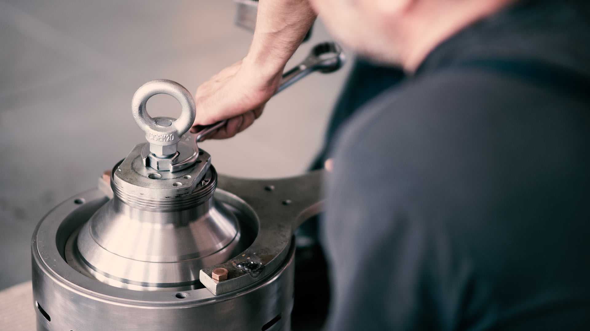
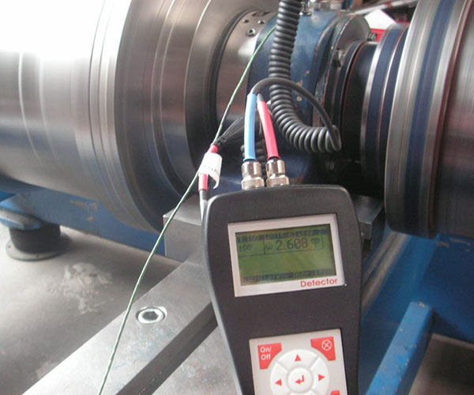

Oferecemos cobertura completa de serviços para centrífugas e separadores industriais e marinhos. Da manutenção preventiva ao atendimento emergencial, a nossa prioridade é o seu processo.


A manutenção preventiva é a forma mais eficaz de evitar problemas inesperados e proteger o desempenho a longo prazo do seu separador.
Realizamos inspeções regulares e verificações baseadas na condição operacional. A nossa equipa orienta os seus operadores sobre como limpar adequadamente e identificar desgaste.
Inspeção do bowl, vedações e portas de entrada/saída
Serviço intermediário com troca de gaxetas
Lubrificação e verificação de componentes rotativos
O Major Service é a revisão anual completa do seu equipamento. Inclui todos os itens do serviço preventivo, acrescidos de uma análise profunda no chassi e componentes estruturais.
Isso dá-nos a oportunidade de identificar problemas futuros a curto prazo e evitar inatividade não planeada, além de permitir o planeamento de orçamentos para reparações maiores.
Desmontagem completa e limpeza geral
Verificação de rolamentos, eixos e drives
Teste de desempenho (Água/Produto) e calibração

Compare os escopos das nossas principais intervenções técnicas.
| Escopo Técnico | Preventiva Minor Service |
Revisão Geral Major Service |
Em Oficina Shop Service |
|---|---|---|---|
| Inspeção do Bowl e Peças | |||
| Troca de Gaxetas e Vedações | |||
| Relatório Técnico Detalhado | |||
| Inspeção do Chassi e Estrutura | - | ||
| Substituição de Rolamentos | - | ||
| Testes de Calibração | - | ||
| Balanceamento Dinâmico | - | - | |
| Microusinagem e Jateamento | - | - |
Estrutura completa para atender na sua fábrica ou na nossa sede de alta tecnologia.
A nossa equipa de engenheiros vai até ao seu navio ou instalação industrial. Garantimos o mínimo de tempo inativo resolvendo o problema diretamente no local onde ele ocorre.
Para reconstruções completas, a precisão e qualidade encontram-se aqui. As nossas capacidades avançadas de reparação estrutural restauram os rigorosos padrões de fábrica.
Quando o seu separador para, cada minuto conta. Enviamos técnicos assim que o pedido crítico é validado. Não operamos com 100% da equipa bloqueada na agenda para garantir esta flexibilidade de o socorrer.
Falar no WhatsApp 24/7A manutenção de rotina não é um custo, é uma proteção. Veja o que prevenimos ao manter o seu equipamento rigorosamente em dia.
Perda de horas de produção valiosas por falhas que poderiam ser previstas e corrigidas antes de quebrarem.
Contaminação do produto final ou danos irreversíveis aos componentes internos (rotores e eixos) do separador.
O custo de uma reparação emergencial massiva é imensamente maior do que os custos de contratos de manutenção preventiva.